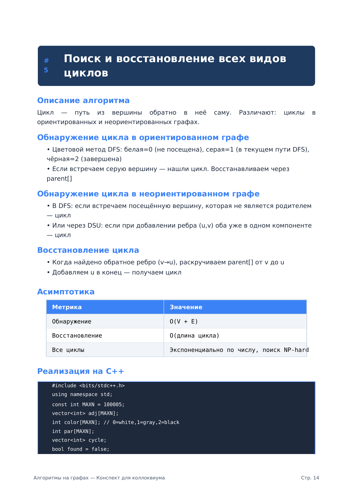
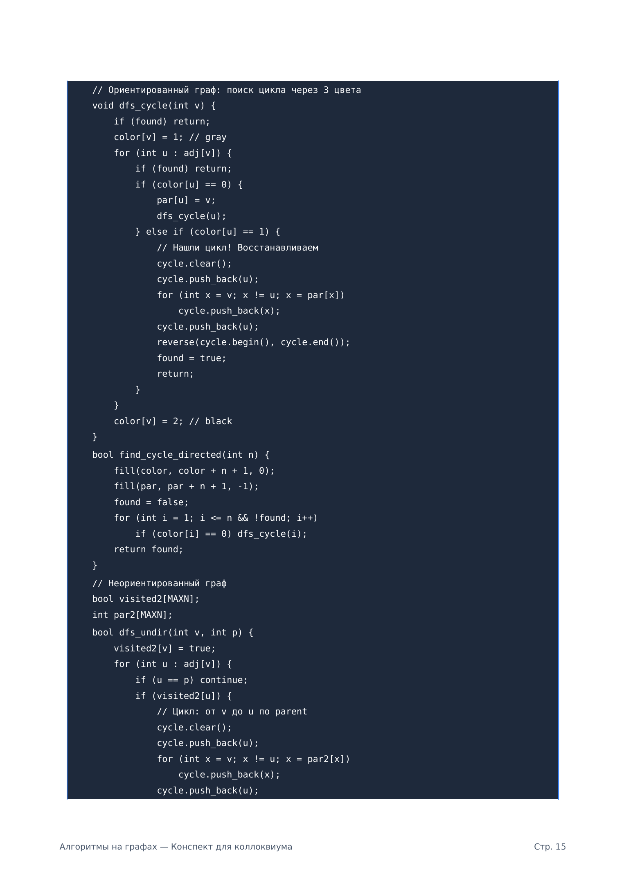
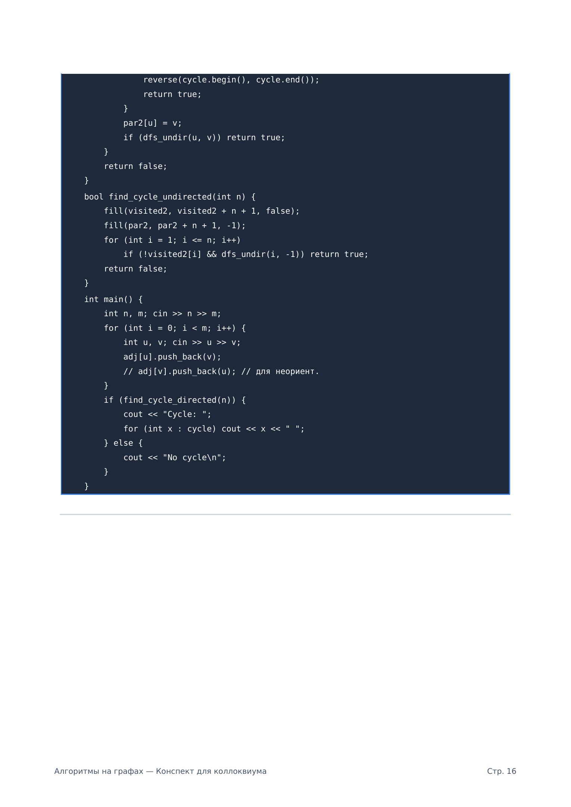

5. Поиск и восстановление циклов
Цикл в ориентированном и неориентированном графе, восстановление пути и проверка через DSU.
Ориентированный граф
- Присвойте каждой вершине цвет 0. Такой цвет означает, что обход ещё не заходил в вершину.
- При входе в вершину присвойте ей цвет 1. Вершины цвета 1 находятся на текущем пути рекурсии.
- При обработке ребра в вершину цвета 0 запишите её предка и продолжите DFS. Ребро в вершину цвета 1 замыкает цикл. Ребро в вершину цвета 2 ведёт в уже обработанную часть графа.
- После просмотра исходящих рёбер присвойте вершине цвет 2. Запустите обход из каждой ещё не посещённой вершины.
Если ребро v → u ведёт в активного предка u, пройдите от v по указателям предков до u, разверните полученный список и добавьте u в конец. Так получается последовательность вершин в направлении рёбер цикла.
Неориентированный граф
В DFS ребро к посещённой вершине, отличной от родителя текущей вершины, указывает на цикл.
Для проверки существования цикла можно последовательно добавлять рёбра в DSU. Если концы очередного ребра уже находятся в одной компоненте, ребро замыкает цикл.
Сложность
Обнаружение DFS занимает O(V + E), восстановление — O(k) для цикла длины k. Перечисление всех простых циклов может потребовать экспоненциального времени, так как самих циклов может быть экспоненциально много.
Страницы из PDF


